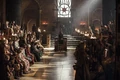

| EP | Imagem | Titulo | Prévia |
|---|---|---|---|
| 31 | "Two Swords" | Tyrion recebe convidados especiais, ao passo que Dany segue para Meereen. Arya reencontra um velho amigo. | |
| 32 | "The Lion and the Rose" | Joffrey e Margaery oferecem um banquete no castelo. Stannis perde a paciência com Davos, e Bran conclui que chegou a hora de partir. | |
| 33 | "Breaker of Chains" | Tywin busca a reconciliação, enquanto Jon faz uma proposta audaciosa. Arya aprende uma lição, e Dany escolhe o seu campeão. | |
| 34 | "Oathkeeper" | Dany faz sua avaliação, e Jaime tem uma tarefa para Brienne. Jon consegue alguns voluntários para sua missão. | |
| 35 | "First of His Name" | Cersei e Tywin querem manter a coroa na família. Dany também tem planos, enquanto Jon parte em uma missão para a Fortaleza de Craster. | |
| 36 |  | "The Laws of God and Men" | Stannis e Davos buscam uma nova estratégia, enquanto Dany exerce o poder de rainha. Tyrion enfrenta seu julgamento e o próprio pai. |
| 37 | "Mockingbird" | Tyrion está de volta à cela, enquanto Daario oferece seus serviços a Dany. Brienne segue uma nova pista, e Clegane faz mais uma vítima. | |
| 38 | "The Mountain and the Viper" | Um grande duelo vai definir o futuro de Tyrion. Ramsay tenta justificar seus atos para o pai, enquanto Dany precisa tomar uma decisão. | |
| 39 | "The Watchers on the Wall" | A Patrulha da Noite enfrenta o seu maior desafio, já que o Exército de Mance Rayder ataca o Castelo Negro. Jon Snow sofre uma perda. | |
| 40 | "The Children" | No último episódio da quarta temporada, Tyrion Lannister está prestes a conhecer o seu destino, e Dany precisa encarar a dura realidade. |